PREMIÈRE PARTIE. DE LA MARCHE DU JEU.
Elle se compose de diverses positions et d’épisodes que j’indiquerai par progression, et qui se développeront successivement dans les chapitres dont se compose cette première partie.
Vouloir définir le petit et le grand Jan, etc., ce serait procéder à l’inverse des opérations de l’entendement humain ; or ici, comme dans l’étude d’une langue ou d’une science exacte, il faut procéder à la manière de Condillac, en passant du connu à l’inconnu a magis noto ad minus notum.
Je me reporterai donc au temps où je fus l’instituteur de mon ami Kermadeuc, et j’observerai l’ordre dans lequel je lui donnai mes leçons.
I. Episodes du Jan de six tables et du petit Jan.
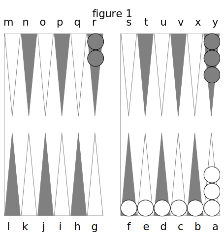
Kermadeuc étant vis-à-vis de moi à la table du Trictrac, fig. 1, je lui dis de prendre les 15 dames blanches ou les quinze noires, et de les mettre en pile, soit dans le coin à sa droite, soit dans celui à sa gauche ; il les met à sa droite, parce que cela est plus commode pour un commençant, et je mets les miennes en face. Ensuite voici ce que je lui apprends : Les dames, ainsi empilées, forment ce qu’on appelé le Talon. La région du Trictrac, où les deux joueurs s’accordent à placer les talons, se nomme le petit Jan. J’ignore l’éthymologie de ce mot Jan; mais cela ne fait rien à notre affaire.
On a toujours trois jetons, avec lesquels on marque les points que l’on prend. Deux points se marquent sur la pointe de la troisième flèche, à partir du talon; 4 points sur celle de la cinquième ; 6 points contre la bande du milieu ; 8 points de l’autre côté de cette bande, et 10 points contre la dernière bande.
Lorsqu’on prend des points le second, on marque en bredouille, c’est-à-dire avec deux jetons que l’on conserve jusqu’à ce que l’adversaire prenne de nouveaux points, auquel cas on est débredouillé, et l’on ôte un des deux jetons.
On prend deux dés, on les agite dans son cornet, du Lord duquel on touche le fond du rictrac, et on les lance de manière à ce qu’ils ne reviennent qu’après avoir été renvoyés de la Lande opposée.
Le dé s’énonce en commençant par le plus gros nombre : par exemple, si l’on amène un 3 et un 4 ? on dit 4 et 3. S’il vient deux nombres égaux, cela fait un doublet. Tous les doublets ont des noms particuliers qui n’appartiennent qu’au Trictrac ; le double 2 est le seul qui n’en ait point.
- le double as s’appelle Bezet.
- le double 3 Terne.
- le double 4 Carmes.
- le double 5 Quine.
- le double 6 Sonnez.
Ce sont les termes techniques.
Le premier coup se joue, soit en prenant deux dames au talon pour les deux nombres qu’on a faits,et les jouant chacune sur la flèche éloignée de ce même talon d’autant de flèches, celle du talon non comprise, qu’il y a de points dans chacun de ces nombres ; soit en prenant pour les deux nombres une seule dame que l’on joue sur la flèche éloignée du talon d’autant de flèches, celle-ci non comprise, qu’il y a de points dans les deux nombres ensemble.
Par exemple, si je fais 6 et 2, je compte les flèches, et je pose une dame sur la sixième après celle du talon, laquelle se trouve de l’autre côté de la bande du milieu dans le grand Jan. Je compte de même les flèches pour arriver à la deuxième qui se trouve bien en de-çà de cette bande dans le petit Jan, et je pose une autre dame dessus. Ou bien, comptant toutes les flèches jusqu’à la huitième pour le montant de 6 et 2, je la trouve au commencement du grand Jan, et je pose une dame dessus ; cela s’appelle jouer tout d’une.
Au second coup je suis le même procédé, mais jepuis prendre, soit du talon, ce qu’on appelle abattre du bois, ou des dames déjà jouées, autrement dit abattues. Si par exemple, j’ai 5 et 3, après avoir joué le 3, je puis jouer le 5 ou d’une dame du talon, en la plaçant à la 5e flèche, celle du talon non comprise, ou prendre celle déjà jouée de la 4e et la transporter dans le grand Jan à 5 de distance, non compris celle d’où je la prends, et ainsi de l’autre dame. Je jouerais tout d’une si je voulais. Je puis jouer également du talon les deux nombres en deux ou en une seule dame ; en un mot, je puis jouer ou de deux dames, ou d’une seule, en prenant du talon ou des dames placées antérieurement sur les flèches. Aux autres coups, on a encore bien plus de facilité pour le choix.
Il suit de là que l'on doit considérer toutes les flèches sur lesquelles il y a des dames, comme autant de talons d’où l’on peut prendre l'une ou l’autre, ou les deux dames, ou la seule dame qu’on veut jouer.
On appelle case toute flèche sur laquelle il y a au moins deux dames placées.
Lorsqu’on commence la partie, l’un des joueurs jète les dés ; et le premier coup appartient à celui du côté de qui se trouve le plus gros dé. Si c’est uri doublet, le coup est nul, et l’autre joueur prend les dés à son tour, pour savoir à qui le premier coup appartiendra.
Ces notions établies, Kermadeuc jette les dés et amène 2 et as. Le deux se trouvant plus proche de lui, il joue 2 et as, en plaçant une dame sur la première et une dame sur la deuxième flèche, non compris celle du talon.
Pour faciliter les démonstrations, je dénommerai les flèches, à commencer par celle du talon, A, B, C, D, etc., toujours fig. 1.
A mon tour, j’amène 4 et 3 que je joue en U et en T ; Kermadeuc 4 et 3 aussi, qu’il joue en D et en E.
Il me vient 3 et 2 que je joue d’une dame prise de T en R, et d’une autre de U en R. Kermadeuc, après, amène 6 et 5.
C’est à présent qu’il va se trouver faire le Jan de six tables, c’est-à-dire qu’il va avoir six dames sur ses six premières flèches, après celle du talon. Il marque pour cela 4 points, mais avant de jouer, car il faut toujours marquer ses points d’abord : c’est un des principes fondamentaux du jeu. Si on jouait avant de marquer, on serait mis à l’école, c’est-à-dire que l’adversaire marquerait, en punition, les points comme si on les avait oubliés ; et on est censé les oublier lorsqu’on ne les marque pas à temps.
Il faut observer, à l’égard du Jan de six tables, 1. qu’il ne doit se faire que dans les trois premiers coups, passé lesquels il n’a pas lieu ; 2. qu’on n’est pas obligé de le jouer tel qu’on l’a amené. Ainsi Kermadeuc pourrait jouer 6 et 5 en prenant des flèches C et D pour porter sur celle J, ou autrement. Cependant je lui fais placer deux dames du talon en F et en G, pour essayer une autre position.
Pour moi, je fais après cela 5 et 4 que je joue de deux dames du talon en T et en S, fig. 2.
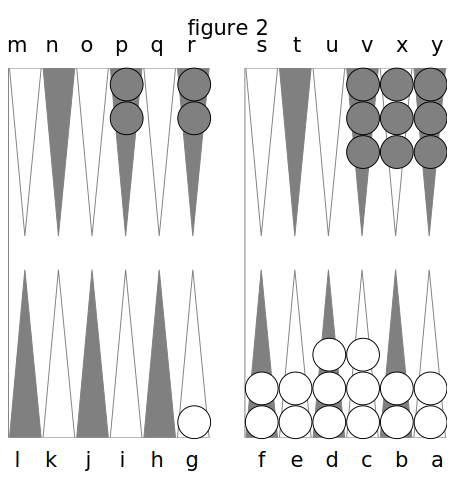
Kermadeuc amène 2 et as, et joue deux dames du talon en B et en C.
Je fais une deuxième fois 4 et 3, que je joue de T en P, et de S en P.
Kermadeuc fait 4 et 3 qu’il joue en D et en E.
J’amène ensuite 2 et as, que je joue en X et en V.
Kermadeuc fait 2 et as, qu’il joue ensemble en D,
Je fais encore 2 et as, que je joue comme devant.
Kermadeuc fait bezet, qu’il joue tout d’une en C.
Je fais encore 2 et as, et les joue de même.
Kermadeuc amène 3 et 2, et enfin il fait le plein du petit Jan, ou le petit Jan proprement dit.
Le plein du petit Jan a donc lieu lorsqu'on est arrivé à avoir, dans cette région du Trictrac, autant de cases qu’elle renferme de flèches.
Kermadeuc fait donc son plein, puisqu’il peut jouer la dame surnuméraire (on appelle surnuméraires les trois dames qui excèdent les douze nécessaires pour un plan quelconque) qui reste au talon en F par 3 et 2, ou celle en C par le 3, ou celle en D par le 2. Il remplit même d« trois façons, puisqu’il a le choix pour couvrir la dame en F, par une des trois en A, C, D. Il ne remplirait que d’une ou de deux façons, si une ou deux de ses dames surnuméraires étaient, ou au talon, ou toute en surcase sur C ou D, ou que plusieurs d’elles fussent plus loin qu’en F. Or, il doit marquer 4 points pour chaque façon, ce qui fait 12^ lesquels, joints aux 4 du Jan de six tables qu’il a déjà, font un total de 16 ; mais 12 points donnent un trou; il marque donc un trou, partie simple, plus un trou partie double, pour la bredouille, puisque je n’ai pas pris de points ; et j’ai déjà dit qu’on était en bredouille, quand on prenait des points après son adversaire, ou tant qu’il n’en prenait pas, ce qui donne le droit de marquer double les trous. En outre il lui reste 4 points.
Il résulte donc, que lorsque l’onfait le plein du petit Jan, on marque autant de fois 4 points qu'il y a de façons dont on remplit, c’est-à-dire lorsqu’on pourrait jouer pour compléter la case manquante de l une, des dames en surcase sur les flèches précédentes, pour chacun des deux nombres, ou d’une seule dame pour les deux nombres ensemble.
Après avoir pris ses deux trous, Kermadeuc joue tout d’une de D en F, fig. 3.
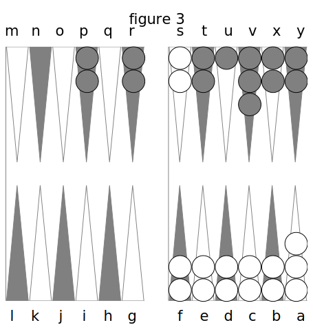
Moi j’amène une quatrième fois 2 et as, et je fais la case en U.
Kermadeuc fait 5 et 3, et comme il peut les jouer sans déranger son plein, avec la dame de surcase en C, il conserve ou tient, et en conséquence il marque 4 points, ce qui lui fait 8. Il joue la dame de C en K tout d’une.
J’amène 3 et 2, que je joue du talon en V et en U.
Kermadeuc fait double a et il lient encore, parce qu’il peut jouer de G en K tout d’une. Il gagne 6 points à cause du doublet, ce qui me donne l’occasion de dire que l’on compte 2 points de plus, toutes les fois qu’on amène un doublet. Mais 8 points qu’il avait font avec ceux-ci, pour lesquels il prend deux trous et marque 2 de reste.
Après cela je fais 2 et as, que je joue de U en T. Kermadeuc fait carmes. Mais quelle est sa position en ce cas ? Peut-il, pour conserver, placer des daines dans mes régions? Il 11e peut pas en placer dans mon grand Jan, par la raison que je puis y faire mon plein; mais comme j’ai une flèche vide en S, il peut emprunter le passage en O dans mon grand Jan, et venir placer une de ses dames de K dans mon petit Jan, où je ne peux plus faire de plein, sur la flèche S. Il tient donc encore. D’où j’énonce un troisième principe que : tenir ou conserver, c’est pouvoir, sans déranger son plein, jouer ses dames surnuméraires y tant dans ses deux Jans que dans le petit Jan de l’adversaire. Par conséquent il a 6 points, à cause du doublet, et 2 qu’il avait font 8. II joue tout d’une de K dans mon petit Jan en S. Je jète les dés et j’amène sonnez, que je joue du talon en R.
Kermadeuc répète carmes qu’il peut jouer de l’autre dame en K, de même sur S de mon petit Jan. Il tient donc une quatrième fois et a 6 points de plus, lesquels, avec 8 qu’il avait, font 4. Il prend deux trous et marque 2 points de reste ; mais je lui dis de s’en aller, parce que son jeu ne serait plus bon. On a le droit de s'en aller, lorsqu’on a marqué un ou plusieurs trous; c’est-à-dire qu’on efface tous les points restant de part et d’autre, on relève les daines et on les remet au talon pour recommencer sur nouveaux frais.
II. Du Jan de deux tables, du coin de repos et des dames battues à vrai.
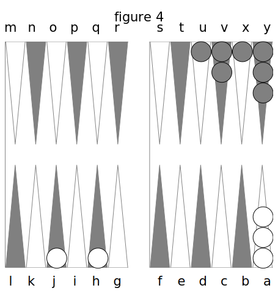
Kermadeuc a le dé, c’est-à-dire la faculté de jouer le premier, dans ce relevé-ci, faculté qu’a toujours celui qui s’en va. Il amène 6 et 5, qu’il joue naturellement en F et en G (fig. 4) carilne peut les jouer tout d’une attendu que la dernière case L, autrement appelée le coin de repos, ne peut se faire qu’en y plaçant les deux dames à-la-fois.
J’amène 2 et as, que je joue tout à bas ou naturellement.
Kermadeuc fait ensuite 4 et as 5 R joue l’as d e G en II, et le 4 de F en J.
Je fais 2 et 3, que je joue encore tout à bas. Kermadeuc amène 4 et 3 ; il gagne encore 4 points, parce qu’il fait le Jan de deux tables.
Or, le Jan de deux tables arrive, lorsque, de deux dames abattues et passées dans le grand Jan, l’adversaire n’ayant pas son coin fait, on pourrait, par les nombres que l’on a amenés, en mettre une dans son coin, et l’autre sur le coin de l’adversaire, ce qui s’appela battre les deux coins.
En effet, Kermadeuc pourrait placer sa dame en J sur M de mon grand Jan par le nombre 3, et sa dame en H sur L du sien, par le nombre 4. Il le pourrait en droit ; mais comme cela n’est pas admis en réalité, il en résulte une indemnité qui consiste à prendre 4 points.
S’il eut amené 5 et 2, il eût également battu les deux coins ; car il n’importe pas que ce soit l’une des deux dames qui batte toujours le même coin. Si, ces deux dames étant en I et J, il eût amené terne, il eût encore battu les deux coins par le même principe, et, en outre, il eût compté 2 points de plus à cause du doublet.
Mais si j’avais ma case M faite, Kermadeuc, au lieu de gagner 4 points, en eût perdu 4, parce qu’il aurait battu à faux les deux coins. On nomme cet épisode le contre-Jan de deux tables. Nous allons bientôt voir ce que c’est que battre à faux.
Kermadeuc, du reste, a joué du talon en D et en E, fig. 5. Moi je fais bezet, que je joue tout à bas ou comme il est venu, expression équivalente.
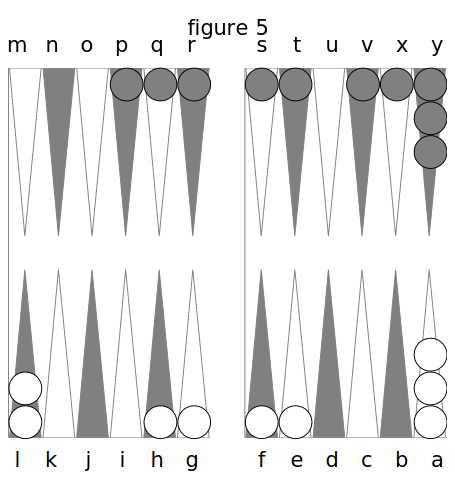
Kermadeuc amène 4 et 2 ; alors il fait la onzième case L, ou autrement il prend son coin. Cette case ne peut se faire, je l’ai déjà dit, qu’en y plaçant deux dames à la fois, c’est la plus importante, c’est le pivot du jeu, et c’est celle qui joue le plus grand rôle. Kermadeuc avec elle va pouvoir dominer dans mon jeu.
Le principal but du jeu consiste à faire le plein dans le grand Jan; mais, avant de le faire, on peut gagner des points, comme on vient de le voir, et comme on va le voir encore mieux.
Il y a encore une autre manière de prendre son coin, c’est lorsqu’on amène des dés tels qu’en diminuant un point sur chaque nombre, on puisse, avec les dames qu’on a dans son grand Jan, faire son coin, comme si on eût réellement amené les nombres ainsi diminués. Cela s’appelle prendre le coin par puissance : par exemple, si Kermadeuc eût amené 5 et 4, il eût fait de même son coin en diminuant un point sur le 5 et un sur le 3. C’est un privilège qui fait partie du jeu ; mais dès que votre adversaire a fait son coin, vous ne pouvez plus faire le vôtre de cette manière.
A mon tour je fais 6 et 5, que je joue de X en R et en Q.
Kermadeuc amène 5 et as. Il marque alors 4 points de plus, parce que le total de ces nombres qui fait 6 arrive juste sur ma dame en R, et que par le nombre 5 il arrive sur ma dame en Q; or, il aurait le droit de placer les deux dames de son coin sur mes deux dames en Q et R ; mais comme cela n’est pas admis en réalité, il en résulte pour lui une indemnité de 4 points qu’il ajoute aux 4 qu’il a déjà. On appelé cela, battre à vrai.
Il joue 5 et as tout d’une du talon en G. Moi je fais 6 et 5, que je joue de V en P, et de Y en S, ne pensant pas à faire mon coin par Q et R.
Kermadeuc amène 4 et 3 ; il en résulte dpoints de plus pour lui : 1. 4 points, parce qu’il bat ma dame en P, par le nombre 4, puisqu’il pourrait placer dessus une de ses deux dames du coin ; 2. 4 autres points, perce qu’il bat ma dame en S par le 4 et 3 ; et parla même raison 6 points et 8 qu’il avait font 14, pour lesquels il prend deux trous et marque 2 de reste.
Ce n’est pas seulement de la case L qu’il pourrait battre, mais de toute autre flèche où il aurait seulement une darne, pourvu que les nombres qu’il amènerait correspondissent juste aux distances entre les flèches sur lesquelles il aurait des dames, et les dames découvertes placées sur mes flèches. Donc, on bat, lorsque, des dames que Von a dans son jeu A on peut, pour arriver aux darnes découvertes placées dans le jeu de l'adversaire, compter une distance cVautant de flèches qu’il y a de points, soit dans l’un et l’autre, l’un ou Vautre, ou les deux nombres ensemble qu’on a amenés.
Kermadeuc joue 4 et 3 tout d’une d’A en H.
Pour moi, j’amène 3 et as, que je joue tout d’une en T.
Kermadeuc amène 6 et 5 : oh! alors il prend 20 points, et voici comment :
Il pourrait placer une des dames de son coin par 5 sur celle en Q de mon grand Jan, et l’autre par 6 sur celle en R; or, cela lui vaut 4 points. Ensuite, il pourrait placer l’une de ces deux dames par 6 et 5 sur celle en X, et sa dame en H sur celle en S de mon petit Jan, ce qui lui vaut 8 points ; car toutes les dames battues dans les petits Jans donnent 2 points de plus que dans le grand Jan, voilà donc 12 points. De plus, il a l’arrière 6 et 5 qui part de G, puisqu’il pourrait, par 6 et 5, placer la dame qu’il a en G sur celle en R de mon grand Jan, qui se trouve ainsi baltuepar 6et 5, et lui donne 2 points ; et l’arrière 6 et 5 de E en P qui lui donne aussi deux points; de sorte que ma dame en P est battue par le point de 6 et 5 ; celle en Q par le point de 5; celle en R par le point de 6 et 5, et celle en X par le point de 6 et 5 seulement. Tout cela ne fait encore que 16 points. Mais il est un nouveau bénéfice que Kermadeuc ne connaît point : il bat mon coin ; c’est-à-dire, que, comme je ne l’ai pas encore fait, il pourrait placer dessus ses deux dames de G et de H, et comme ce n’est également qu’un droit, une puissance sans réalité, il en résulte une indemnité de 4 points pour lui ; ce qui fait 20. 20 et 2 qu’il avait font 22 points, pour lesquels il prend deux trous, et a 10 points de reste.
Donc, on bat le coin de son adversaire toutes les fois qu’on a des daines sur les flèches qui sont éloignées de ce meme coin, dans la proportion des nombres qu’on a faits par les dés.
Il suit de là que, pour battre le coin par doublet, il faut avoir deux dames sur la case qui est éloignée du coin d’une quantité correspondante aux dés qu’on a amenés. Ainsi, si Kermadeuc eut fait quine, il n’eùt pas battu le coin, parce qu’il n’a qu’une dame en H, seule flèche d’où l’on puisse en prendre deux pour les mettre sur mon coin.
Si j’avais mon coin fait, il cesserait de le battre, mais il ne le battrait pas non plus à faux; il n’en est pas de ceci comme du Jan de deux tables.
Si j’avais eu des dames découvertes sur toutes les flèches de mes deux Jans, et que Kermadeuc eût eu des dames sur toutes les siennes, il aurait battu toutes mes dames les unes après les autres, comme on peut le voir dans la figure 6.
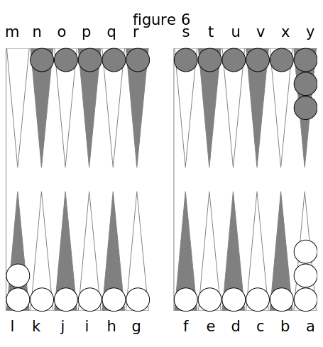
En effet, on voit qu’il eut battu la dame que j’ai en N par le 5, le 6 et le 6 et 5, au moyen de ses daines en I, en H et en C, ensuite ma dame en O, de même par le 5, le 6 et le 6 et 5, au moyen de ses dames en J, en I et en D ; ainsi du reste. D’après quoi, il faut poser en principe que : lorsqu’il y a plusieurs dames découvertes dans le jeu de l’adversaire, chacune d’elles est battue séparément et indépendamment des autres, et qu’ainsi la même dame que l’on a sur une flèche peut battre plusieurs de celles de l’adversaire, puisqu’elle se trouve successivement, à leur égard, dans les distances correspondantes au nombre amené.
En voilà assez, je crois, sur les dames battues, pour apprendre à un commençant ce que c’est que battre à vrai. La pratique lui apprendra à suivre l’application de ce que je viens d’établir.
III. Du Jan de Mézéas et des dames battues à faux.
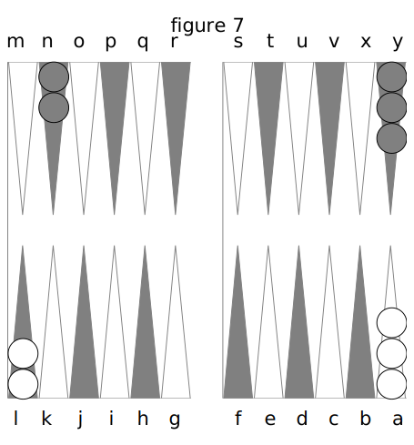
Kermadeuc, après avoir pris plusieurs trous, s’est en allé, et nous recommençons un nouveau relevé, figure 7.
Il amène sonnez, qu’il ne peut jouer autrement qu’en G.
Je fais 5 et 4 q ue j’abats.
Il répète le sonnez, et alors il prend, son coin par puissance.
J’amène 6 et 5, avec lesquels je fais la case N.
Kermadeuc amène 6 et as, et alors il gagne 4 points, parce qu’il pourrait, en droit, placer une des dames de son coin dans le mien, et qu’il est indemnisé pour ce droit de 4 points ; cela s’appelle le Jan de Mézéas. S’il eut amené bezct, il eût gagné 6 points.
Donc, le Jan de Mézéas arrive lorsqu’ayant fait son coin et n’ayant pas d’autres dames abattues, on amène un as.
Si mon coin était fait, alors Kermadeuc perdrait 4 points, c’est ce que l’on appelle le contre Jan de Mézéas.
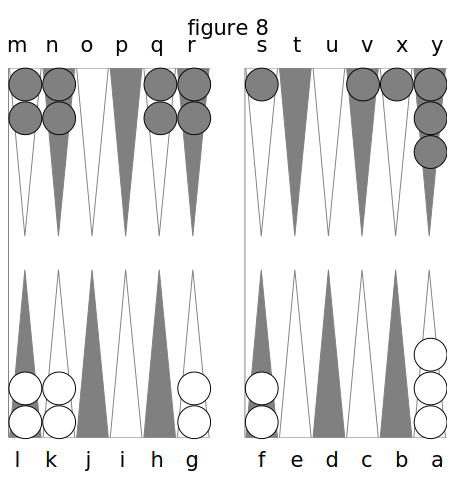
Sans m’appliquer maintenant à détailler tous les coups que Kermadeuc et moi nous avons joués, je suppose que nous soyons dans une position telle que, figure 8, j’aie mon coin, que mes cases N, Q, R, soient faites, et que j’aie des dames isolées ou découvertes sur S, V et X. Kermadeuc entre autres dés amène 6 et as. Je dis qu’il perd 4 points ; pourquoi les perd-il ? Parce que l’as et le 6 qui partent de son coin trouvent faites mes cases en M et en R, qui lui ferment les passages, et que par conséquent, il n’a pas le droit ou la puissance d’y faire passer une des dames de son coin pour la placer sur la dame découverte que j’ai en S ; il ne la bât qu’à faux.
Donc, on bat à faux lorsqu’on amène des nombres qui n’arrivent sur les dames découvertes du jeu de son adversaire, qu’en passant sur des cas es faites.
Kermadeuc a battu à faux ma dame en S, parce que les flèches de Pas et du 6, M et R, où il faudrait que ses dames du coin passassent, sont chargées d’une case.
Si le coup suivant il amène 6 et 5, alors il gagne 4 points et.en perd 8. Il gagne 4 points, puisqu’il bat ma dame en V, par sa case K, qui passe par le 6 en P ; il perd 8 points, parce que sa case H ne bat ma dame en S qu’en passant par 5 et 6 sur M et N, qui sont des cases faites, et que son coin L n’arrive sur ma dame X qu’en passant par 5 et 6 sur Q et R qui sont aussi des cases. S’il amenait sonnez, il perdrait deux trous, puisqu’il battrait mes dames en R et en X par ses cases F et R. qui tomberaient par 6 sur mou coin M et ma case Q.
On voit donc, que l'on ne peut battre à faux que par le montant des deux nombres qu’on a amenés, et non par un seul des deux.
C’est ici que l’on peut entrevoir combien il importe de savoir se faire battre à faux ; mais c’est ce que je me réserve de dire dans ma troisième partie. Il me suffit d’avoir indiqué ici comment cela peut se faire. J’observerai, avant de finir ce chapitre, que lorsque l’on est battu à faux on ne peut pas s’en aller après les trous qu’on a gagnés. La faculté de s’en aller n’a lieu que lorsque l’on prend des trous et non lorsqu’on les reçoit. Ainsi, quand même Kermadeuc me donnerait six trous de suite, en me battant à faux, je serais obligé de rester quelque mauvais jeu que j’eusse.
IV. Du plein du grand Jan.
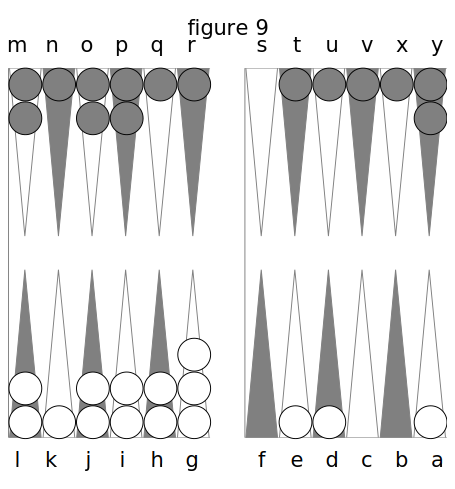
Le plein du grand Jan se fait de la même manière que celui du petit Jan, c’est-à-dire qu’il faut, pour l’effectuer, faire six cases sur les six flèches de cette région. Je suppose donc, fig. 9, que Kermadeuc n’ait plus pour faire son plein qu’à couvrir la dame en K, et que moi j’en aie trois découvertes dans mon grand Jan, en N, Q et R ; on voit que Kermadeuc a beau jeu et qu’il doit faire son plein le premier. Il jète les dés et amène 6 et 4 ; alors il remplit d’une, de deux et même de trois façons. En effet, il remplit par le 4, à cause de sa dame de surcase en G ; par le 6, à cause de celle en E, et par le 6 et 4, à cause de celle qui reste au talon A, et qui pourrait aller tout d’une sur K. Chaque façon donne 4 points comme au petit Jan, ce qui lui fait 12 points. En outre, il prend 6 points sur ma dame découverte en N, parce qu’il la bat du 4 et du 6 par J et G de son grand Jan, et du 6 et 4 par la dame en D de son petit Jan ; il prend 4 points sur ma dame découverte en Q, qu’il bat du 6 et du 6 et 4 par ses dames en K et en G ; il prend 4 points sur ma dame découverte en R, qu’il bat par L et G; enfin, il prend 12 points sur mes trois dames en T, U et V, qu’il bat du point de 6 et 4 par J, K et L ; cela fait donc en tout 38 points. Je suppose qu’il en eût dix auparavant ; il en a donc, en total, 48 ; mais je suppose en avoir 4 et qu’il n’ait point la bredouille, il marque alors sept trous seulement, et il joue tout d’une du talon pour remplir en K.
J’amène 6 et 3, par le moyen duquel je couvre de T en N et de U en R ; mais comme je bats à faux les dames E et D de Kermadeuc par M et N de mon grand Jan, il en résulte 8 points pour lui.
Il ne sera pas difficile de faire comprendre ici aux commençans que lorsqu’on a fait le plein de son grand Jan, les dames découvertes qu’on a dans le petit Jan ne peuvent plus être battues qu’à faux, puisque, tous les passages étant fermés, les nombres que l’adversaire amène ne peuvent tomber en passant que sur des cases faites.
Kermadeuc à son tour fait 6 et 3, pour lequel il prend 4points, puisqu’il conserve, c’est-à- dire, qu’il joue sans déranger son plein.
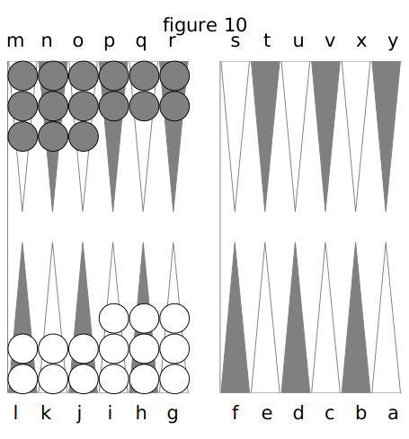
Mais pour épargner au lecteur un détail fastidieux, je suppose qu’ayant fait mon plein aussi, fig. 10, Kermadeuc a ses trois dames surnuméraires en surcase sur G, H et I, et moi, les miennes sur M, N et O. Kermadeuc fait 6 et 5 ; comment fera-t-il pour jouer ce nombre? A la vérité, il peut bien jouer le 5 de G sur L ; mais où jouera-t-il le 6, puisqu’il n’y a plus rien au-delà de K, et que tous les passages sont occupés dans mon grand Jan? Eb bien! il tient encore, et c’est ce qu’on appele, conserver ou tenir par impuissance.
En effet, Kermadeuc joue le 5 de G sur L ; mais il est dans l’impuissance de jouer le 6, donc il tient encore, puisqu’il ne dérange pas son plein : il marque donc 4 points ; mais comme il ne joue pas le 6, je marque 2 points par cette règle, que toutes les fois que votre adversaire ne peut pas jouer une dame vous gagnez 2 points.
J’amène 6 et 2, et je tiens aussi par impuissance, puisque je joue le 2 de O sur M et que je ne puis jouer le 6.
Kermadeuc ensuite fait 6 et 4, et tient encore, puisqu’il ne peut jouer le 6 et qu’il joue le 4 de la dame de surcase en H qu’il place sur L.
Ensuite, je fais 6 et as, et je tiens, parce que je mets Vas de N sur M.
Kermadeuc amène 6 et 3, et tient encore.
Je fais 5 et 4 que je joue en rompant, c’est- à-dire, en levant une dame de R et une de Q pour mettre sur M.
Kermadeuc amène sonnez ; il tient toujours, puisqu’il ne peut jouer aucun 6. Enfin, je répète 5 et 4 et je retrousse les deux dames restantes de Q et R sur M, fig. 11.
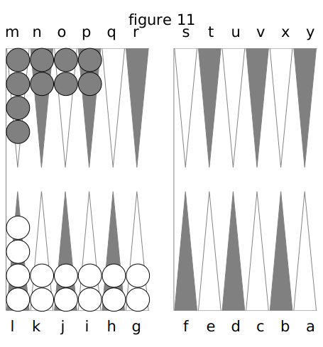
Je crois donc avoir suffisamment démontré ce que c’est que le plein du grand Jan. Un commençant qui a de l’intelligence aura dû remarquer que cette faculté que l’on a de tenir par impuissance est d’un grand avantage, puisqu’en ne jouant, lorsqu’on amène des 6, que l’un des deux nombres, on peut tenir plus longtemps; mais je reviendrai là-dessus à la troisième Partie.
V. Du Jan de retour.
On vient de voir dans la dernière position que j’ai été obligé d’évacuer mes flèches R et Q et de retrousser sur M ; j’ai donc ouvert deux passages par Q et R dans mon jeu, fig. 11.
J’ai déjà dit au chapitre du petit Jan, que Kermadeuc pouvait passer dos dames dans mon petit Jan en empruntant le passage dans mon grand Jan. Il peut donc de même, à présent, en placer non-seulement dans mon petit Jan, mais en outre dans mon grand Jan en Q et en R, attendu que je ne puis plus faire de plein nien tenir dans celte région du Trictrac. Si je pouvais encore y faire le plein, quoiqu’ayant une ou deux flèches vides, Kermadeuc ne pourrait qu’emprunter un passage sans s’y arrêter.
Ainsi, c’est donc un droit établi pour tous les Jans, que l'on ne peut placer aucune dame sur les flèches vides de son adversaire, lorsque les dames dont il a besoin pour faire le plein n’ont pas encore dépassé cette flèche.
Comme je me retrousserai probablement de beaucoup de daines après la flèche R, Kermadeuc pourz'a donc placer toutes les dames dont il sera retroussé dans son jeu, tant dans la partie de mon grand Jan que j’aurai évacuée, que dans mon petit Jan.
Il tient plusieurs fois en passant ses trois dames par des 5 et des 6 jusqu’à ce qu’il les ait placées jusque sur X et Y; et alors, amenant un carmes, il cesse de tenir et relève ses deux dames de G sur L. Pendant ce temps-là, je n’ai amené que des 6 et des 5 que je n’ai pu jouer, et pour lesquels j’ai perdu 4 points à chaque coup. Ensuite, Kerinadeuc amène des ternes, des 4 et 3, et divers autres dés, par suite desquels ne pouvant pas passer dans mon jeu, il relève successivement toutes ses dames de G, H et I sur J, K ou L; de même', je relève les miennes et passe dans le sien, de manière à ce que nous fassions des invasions l'un chez l’autre, nous nous y établissions et nous y étendions comme on peut le voir dans la fig. 12.
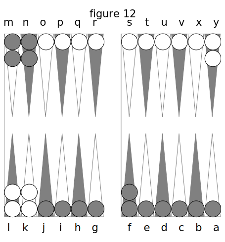
A présent, il va se former une nouvelle configuration, un nouvel épisode de jeu, c’est ce qu’on appelle le plein du Jan de retour, plein que les deux joueurs cherchent à faire dans le petit Jan l’un de l’autre. Pendant que Kerma- deuc cherche à remplir dans mon petit Jan, je cherche de mon coté à remplir dans le sien ; bien entendu que chacun de nous cherche à arriver le plus vite h ce plein, comme aux pleins qui ont précédé. Le plein du Jan de retour se fait absolument de la même manière que les deux autres, d’une de deux et de trois façons ; mais il ne se conserve par impuissance, comme celui du grand Jan, que lorsqu’on 11’a pas encore passé son coin.
Il faut que l’on sache que de même que le coin n’a pu se prendre qu’en plaçant deux dames à la fois dedans, on ne peut le quitter qu’en passant de même ces deux dames à la fois ; d’où il suit que si Kermadeuc a le plein fait dans le Jan de retour, fig. 13, et son coin non encore passé, et qu’il amène un 6 et as ou 2, ou enfin un 6, et l’un des nombres qui répond aux flèches sur lesquelles j’aie encore des dames il ne peut passer son coin.
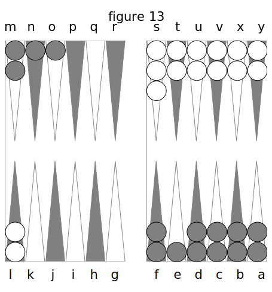
Par conséquent, il ne peut jouer le 6, et joue seulement l’as ou le 2, si c’est un as ou un 2 de la dame de surcase en S, dans mon petit Jan, soit qu’elle soit en T ou en U ; c’est ce qui fait tenir par impuissance.
Si j’avais passé toutes mes dames dans son jeu et même les dames de mon coin, et qti’il amenât des as, il ne pourrait encore passer son coin, parce que, l'on n'a jamais le droit de placer des dames dans le coin de son adversaire.
Mais on ne peut plus tenir par impuissance lorsque l’on a passé son coin.
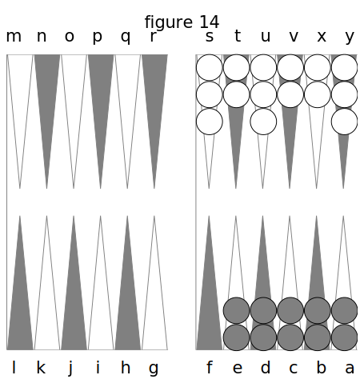
Kermadeuc ayant passé toutes ses dames dans mon petit Jan et moi toutes les miennes dans le sien, fig. 14, amène un 6 et 3. Il tient encore, parce qu’il y a une faculté de tenir dans cette position qui n’existe point dans le plein du grand Jan. Cette faculté consiste en ce que la bande compte pour une flèche après celle-du talon. Ai nsi, parce moyen,labande offre un point de plus à jouer. Kermadeuc tient donc, et joue le 6 de sa dame en surcase sur S sur la bande, et le 3 de U sur Y.
Le coup suivant, il amène bezet et il tient encore, parce qu’il joue les deux dames en surcase sur X, sur la bande par as et as.
Le troisième coup, il ne peut plus tenir, et alors il peut mettre successivement sur la bande toutes les dames que ses nombres l’obligent de relever.
Lorsqu’il a une ou deux ou trois cases levées et qu’il amène des 6, des 5, des 4 ou tout autre nombre qui excède la distance qu’il y a entre ses dames les plus éloignées et la bande, il lève les dames les plus éloignées et les met sur la bande ; de sorte que plus il fera de gros dés, plutôt il lèvera ou sortira, ce qui est de sou intérêt, car celui qui lève ou sort le premier gagne 4 points, ou 6, si c’est par doublet.
Donc, lorsque l’on a rentré toutes ses dames dans le petit J an de son adversaire, on est obligé de lever ou de sortir ; et on lève ou sort en jouant sur la bande les dames qui en sont éloignées d’autant de flèches, en comptant la bande pour une, qu’il y a de points dans l’un ou l'autre des nombres qu’on a amenés.
Ainsi, si Kermadeuc, fig. 14, après avoir amené son bezet, amène 6 et 5, il lève le 6 de S sur la bande, et le 5 de R également sur la bande; si ensuite il fait 3 et 2, ou il peut jouer le 3 en dedans ou en levant une des dames de V et la mettant sur la bande, et 2, une de celle en X, et la mettant aussi sur la bande. Si après avoir relevé successivement les trois cases S, T, U, il amène des 4; des 5 et des 6, il peut prendre les dames les plus éloignées de la bande pour les sortir.
Une fois que l’un des deux joueurs a levé ses dames, alors le jeu recommence ; chacun garde les points qu’il a, et les dames reforment de nouveau le talon.
VI. Du genre des Parties.
Ordinairement le Trictrac se joue en douze trous à la partie.
Il y a des joueurs qui jouent ces douze trous bredouille ; c’est-à-dire, que celui qui les gagne de suite sans interruption, sans que son adversaire en prenne un seul, ou après qu’il en a pris, gagne double; mais il faut que cela soit convenu d’avance.
On ne peut jouer que deux personnes à la fois; mais pour en amuser un plus grand nombre, on joue ce qu’on appelle la poule ; c’est-à- dire, que l’on peut être trois, quatre cinq ou six à jouer; que chacun en entrant met au jeu; que j pour avoir la poule, il faut gagner autant de parties qu’on a de joueurs contre soi, et que chaque joueur qui rentre est obligé de mettre de nouveau au jeu. Ainsi, il peut arriver qu’une soirée entière se passe sans qu’aucun y réussisse : alors on partage la poule. Elle peut être très-forte, arrivée ainsi à ce point, sans avoir été gagnée.
Mais le beau jeu, le grand jeu, c’est le Trictrac à écrire : c’est celui qu’on joue le plus habituellement dans les salons et dans la bonne compagnie. On l’appelle à écrire, parce qu’il consiste en un certain nombre de parties dont on tient le compte, soit avec des jetons, soit sur du papier, au crayon ; mais le plus souvent avec des jetons. Une partie a écrire se compose ordinairement de huit marqués, ou de douze.
Pour gagner un marqué, il faut, le premier, prendre six trous. On peut chercher à en prendre plus si l’on veut, et si l’on a assez beau jeu pour cela ; et le nombre de ceux que l’on peut prendre peut aller à douze, dix-huit, vingt-quatre ou trente trous : il n’y a pas de quantité obligée passé six trous.
Si l’on gagne le marqué sans que la partie adverse ait un trou, on est en bredouille ; de même que si, après qu’elle en a pris, on prend précisément ceux qui font gagner le mavqué sans interruption.
Une bredouille de trous se fait absolument comme une bredouille de points ; et, pour la marquer, on met le pavillon, qui est ordinairement un petit étendard, qu'on plante dans le trou de son fichet.
Des six trous ou plus qu’on a gagnés, on retranche ceux qu’a pris la partie adverse, et l’ort marque la somme restante, en y ajoutant une consolation de 2 points. Si l’on est en bre- -douille, on double les six trous ou plus, avant la déduction, de même que la consolation. Ainsi si l’on a gagné six trous on compte 12 et 4 de consolation qui font 16, dont, en déduisant un trou que je suppose que l’adversaire a pris, on marque x5, soit au crayon sur du papier, soit avec des jetons et des fiches que vous donne votre adversaire, comme cela se pratique au Reversis et au Boston. De plus, on reçoit, dans ce dernier cas, deux jetons de celui qui est marqué, lesquels servent à indiquer les marqués qu’on a joué.
Lorsque, par la note écrite ou parle nombre des jetons, on sait que la partie est finie, on règle le compte. Si l’un des deux joueurs a fait moins démarqués que l’autre, il est postillonné, c’est-à-dire que l’on augmente son compte de 28 points pour le premier marqué qui lui manque, et de 8 pour chacun des autres. Il peut donc, de cette manière, être postillonné quatre fois si l’on joue en huit marqués, ou six fois si l’on joue en douze.
Ensuite ou additionne le tout, et celui qui est marqué d’un plus grand nombre de points que l’autre, perd, pour la différence des points dont il est marqué en plus, ceux de son adversaire déduits, le montant du prix dont ils étaient convenus pour chaque jeton ou fiche. En outre il perd la queue, c’est-à-dire, deux, trois ou quatre fiches en sus, ou une somme quelconque.
Si l’on a joué à tant... la fiche, il peut arriver qu’il y ait un certain nombre de jetons en fraction. S’il y en a cinq et au-dessus, cela compte pour une fiche ; s’il n’y en a pas cinq, ils sont négligés ou ne servent qu’à déterminer la queue. Lorsqu’on marque avec des jetons, il peut arriver que le compte de celui qui a fait le moins de marqués, soit supérieur en nombre de jetons ou points 5 mais alors il gagne la queue des jetons, parce qu’ayant le plus grand nombre des jetons donnés à chaque marqué, il a le droit de prendre la totalité de ces, jetons donnés de part et d’autre, et les paie en déduction des postillons qu’il a essuyés ; ou bien une queue compense l’autre, et il ne perd point de queue.
Il faut ajouter à ce que j’ai dit sur les marqués en bredouille, qu’il y a la petite et la grande bredouille. La petite, c’est celle où l’on compte double seulement les trous d’un marqué gagné jusqu’à douze exclusivement. Mais Si l ? on arrive à douze trous, on gagne la grande qui consiste à marquer quadruples les trous qu’on a fait, ainsi que la consolation. Dans quelques Waison, et même dans certains pays 7 on continue cette progression jusqu’à dix-huit trous, que l’on marque octuples, jusqu’à vingt-quatre, seize fois, ainsi de suite, en doublant toujours la bredouille existante de six trous en six trous. On devrait jouer ainsi partout : à la vérité, cela ferait monter le jeu un peu haut ; mais il en deviendrait bien plus intéressant et plus savant.
Si lorsque celui qui a pris assez de trous pour s’en aller avec le gain du marqué, ayant néanmoins resté pour gagner quelque chose déplus, son adversaire l’a rejoint au même nombre de trous, c’est un refait ; on recommence, et celui qui perd ensuite le marqué sur nouveaux frais perd la consolation double, triple, etc., suivant qu’il y a un ou deux refaits.
On peut encore jouer à écrire deux contre un ; alors l’un des deux fait la chouette, ce qui veut dire qu’il joue seul contre les deux autres qui tirent entre eux à qui jouera le premier. Ceux-ci jouent chacun deux marqués, dans le premier desquels, à chaque rentrée, la chouette a le dé du premier coup, et dans le second, le joueur adversaire.
On joue aussi deux contre deux; et, dans ce cas, celui des deux associés qui a perdu le premier marqué, fait place à l’autre qui en joue deux de suite, et lui reprend aussi par deux autres de suite, jusqu’au dernier seul que joue son partenaire.
Dans ces deux arrangemens de parties, l’associé qui ne joue pas a le droit de conseiller celui qui joue et de l’empêcher de faire des écoles.
Lorsqu’on est plusieurs personnes, et qu’aucune ne veut faire la chouette ni s’associer, on joue chacun pour son compte, ce qui s’appelle à tourner.
Si, par exemple, on est trois, et que l’on convienne de jouer en tout douze marqués, c’est quatre pour chacun, et l’on ouvre trois comptes. Celui des deux premiers joueurs qui perd, se lève pour faire place au troisième qui joue deux marqués de suite ; de sorte qu’il se trouve successivement avec deux adversaires, et ainsi de suite, jusqu’au dernier que joue celui qui s’est retiré le premier ; mais, à chaque marqué, le joueur oisif reçoit une consolation du perdant égale à 1$ consolation que celui-ci paie à son antagoniste.
Le Trictrac à écrire, de même que le Piquet à écrire, est le véritable jeu de la bonne compagnie et des bons joueurs j il est plus intéressant que celui à la partie, et surtout beaucoup plus savant. On pourra voir dans la troisième Partie en quoi il est supérieur à l’autre.
VII. Conclusion de la première Partie.
Je crois avoir démontré assez clairement tous les épisodes qui composent le jeu de Trictrac, en les faisant naître graduellement par suite des coups dont j’ai détaillé l’exécution. Cette méthode que j’ai suivie pour faire connaître le jeu, m’a paru préférable à celle de tous les auteurs qui ont écrit sur cette matière, laquelle consistait à définir avant d’avoir démontré. Au contraire, t’ai pensé qu’il fallait démontrer d’abord, et définir ensuite : c’est la manière des géomètres, et c’est la seule qui convienne à l’intelligence humaine. Il faut toujours, pour faire faire des progrès à un étudiant, en quelque genre que ce soit, mettre le concret avant l’abstrait ; et, pour le dire en passant ici, je ne trouve rien de plus opposé au bon sens, que la méthode avec laquelle on enseigne, depuis des siècles, le latin et les autres langues aux enfans. On commence par leur parler de substantifs et de verbes avant de leur avoir fait concevoir le sens et la signification de ces mots. On leur présente l’abstrait avant le concret, ce qui est diamétralement opposé à la nature des opérations de l’entendement.
Par cette raison, je me suis donné de garde de définir le grand Jan, le petit Jan, etc., avant d’avoir fait exécuter les coups. Je suis bien convaincu qu’un maître de Trictrac, ou toute autre personne qui enseignera ce jeu à quelqu’un, fera faire plus de progrès à son écolier (ou écolière) avec cette méthode qu’avec toute autre. Je ne sais s’il est nécessaire que je dise ici aux coinmençans que toutes les configurations épisodiques que j’ai analisées ne sont pas obligées, ne sont pas liées ensemble; que l’on n’est pas forcé de faire d’abord un Jan de six tables, puis un Jan de deux tables, puis un Jan de Mézéas, un plein de grand Jan, et enfin un Jan de retour ; que je ne les ai placées dans l’ordre qu’on a vu que par forme de cadre ; que l’on peut jouer longtemps sans faire des petits Jans, ni des Jans de Mézéas, ni des Jans de six ou de deux tables, et encore moins des Jans de retour; que la plupart des points que l’on gagne ou que l’on perd proviennent des batteries à faux ou à vrai ; qu’enfin il y a mêmes des épisodes qui s’excluent, tels que le Jan de six tables et celui de deux tables, qui ne peuvent être faits dans le même relevé, puisque lorsque l’on a six dames à bas, on ne peut avoir un Jan de Mézéas, qui ne veut que deux daines à bas, etc., etc.
Je terminerai ce cbapitre et cette première partie par une courte explication sur la manière de marquer les trous.
J’ai déjà dit que lorsqu’on était en bredouille on marquait les trous doubles, et que, dans le cas contraire, on ne les marquait que simples. Dépendant on a pu voir, dans le cours de mes démonstrations, que quoique Kermadeuc eût perdu la bredouille, il marquait des trous en bredouille. Mais quand cela lui arrivait - il ? Lorsqu’il avait 24 points à marquer. La bredouille ne se perd que pour le premier trou ; mais comme le premier trou ou les premiers 13 points que l’on marque effacent les points de l’adversaire, ceux que l’on prend ensuite doivent donc reprendre la bredouille. Lorsque Kermadeuc prenait 24 points sans interruption, après que j’en avais pris 4 ? 6, 8 ou 10, ou sans que j’en eusse pris, il était en bredouille et marquait quatre trous ; mais s’il les avait pris avec interruption, alors il marquait le premier trois, partie simple; et m’effaçant par ce premier trou, les 12 autres points et au-dessus reprenaient la bredouille.
Donc, lorsqu’on prend 24 points et au-dessus, il n’y a que les 12 premiers qui perdent la bredouille, et le reste la reprend, et l’on marque un trou de moins seulement de la quantité de trous qu’on eût marqué, si l’on eût eu la totalité de ses points en bredouille.
Cette définition suffira donc pour faciliter aux commençans la manière de marquer lorsqu’ils auront 24 points et au-dessus.
De là on peut se convaincre de l’inutilité, pour ne pas dire de la niaiserie, de cette table de trous à marquer dressée comme une table de Pythagore, que l’on trouve dans le traité de Damon et Cloris, lequel, par parenthèse, n’est qu’un fatras assommant et inintelligible.